VP9: Spring-Ball Wave and Dispersion of 1D phonon [numpy array]
這份作業說明的長度本來就很長（我還貢獻了一點…），還補充說明了之前跳過的 VP7 提到的 numpy 這個工具，所以大家有空就盡早完成它吧。
影片以及官方PDF
同學們的影片
作業繳交格式
請上傳一個 zip 檔（壓縮檔，請注意副檔名要是 zip）到 CEIBA，zip 檔內需要包含一個名稱是自己學號的資料夾，裡面包含兩個 py 檔。請將必作部份取名為 must.py，另一個檔案則是 histogram.py，後面會有關於這個檔案的說明。若本次作業有拍攝說明影片，請將影片連結寫在 video.txt 裡面，並一併放入學號資料夾中。
範例：（zip 檔名可以隨便取，CEIBA 系統會自己把檔名改掉）
minnaganbare.zip
└── r07222060
├── must.py
├── histogram.py
└── video.txt
助教註:
如果你是用 JuPyter notebook 寫的，請記得將你的程式用 .py 格式下載下來，不要給我 .ipynb 或甚至 .html。
繳交期限
2019/01/12 SUN 21:00
I. Callback and Keyboard Control
In some programs, e.g. games, you use mice or keyboards to control things but at the same time, the programs continue running. An interrupt callback function can help you do this kind of work. The following example shows how to use arrow keys and letter keys (‘i’, ‘o’, ‘r’, ‘c’) to control the earth’s position and rotation axis while the earth continues spinning. However, in Jupyter this will not work since Jupyter console has a higher priority accessing to the keyboard than your vpython program. As a result, your program will not know if a keyboard is pressed or not. You can use the method marked as ##(for JUPYTER also for VIDLE).
Code for ones not using Jupyter
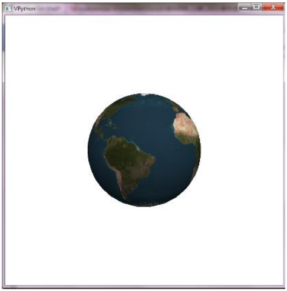
from vpython import *
pos, angle = vector(0, 0, 0), 0
def keyinput(evt):
global pos, angle
move = {'left': vector(-0.1, 0, 0), 'right': vector(0.1, 0, 0),
'up': vector(0, 0.1, 0), 'down': vector(0, -0.1, 0),
'i' : vector(0, 0, -0.1), 'o': vector(0, 0, 0.1)}
roa = {'c' : pi / 90.0 , 'r': - pi / 90.0}
s = evt.key
if s in move:
pos = pos + move[s]
if s in roa:
ball.rotate(angle=roa[s], axis=vector(0, 0, 1), origin=ball.pos)
angle = angle - roa[s]
scene = canvas(width=800, height=800, range=5, background=color.white)
ball = sphere(radius=2.0, texture=textures.earth )
scene.bind('keydown', keyinput)
while True:
rate(1000)
ball.rotate(angle=pi/600, axis=vector(sin(angle), cos(angle) ,0), origin=pos)
ball.pos = pos
In def keyinput(evt), which is the interrupt callback function, global declares the variables (pos, angle) to be global variables, meaning their values will be known to the entire program (exceeding the scope of this function).
s = evt.key gets the key that is pressed. Then you can decide what to do with s. For example, ball.rotate(angle=roa[s], axis=vector(0, 0, 1), origin=ball.pos) will rotate ball with an angle, around axis that passes through origin. Any vpython drawn object, such as sphere or box, can be rotated by this rotate method.
In the main program, command scene.bind('keydown', keyinput) binds keyinput with scene. When your active window is scene and the event 'keydown' (here, a key of the keyboard is pressed) happens, no matter at which part of the program it is now being executed, the bound function, keyinput(), will interrupt and be executed right away. After the bound function has finished, the program will go back to the program where it has left just before the interrupt event has happened.
Code for Jupyter (also available for other environments)
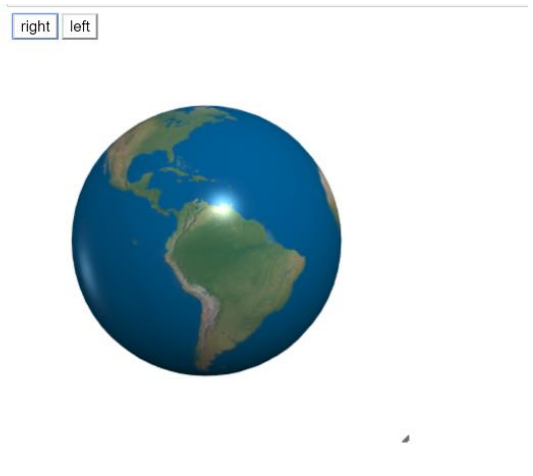
from vpython import *
pos, angle = vector(0, 0, 0), 0
def right(b):
global pos, angle
pos = pos + vector(0.1, 0, 0)
def left(b):
global pos, angle
pos = pos + vector(-0.1, 0, 0)
scene = canvas(width=400, height=400, range=5, background=color.white)
ball = sphere(radius=2.0, texture=textures.earth )
button(text='right', pos=scene.title_anchor, bind=right)
button(text='left', pos=scene.title_anchor, bind=left)
while True:
rate(1000)
ball.rotate(angle=pi/600, axis=vector(sin(angle), cos(angle), 0), origin=pos)
ball.pos = pos
In def right(b), which is the interrupt callback function, global declares the variables pos and angle to be global variables, meaning their values will be known to the entire program (exceeding the scope of this function). When this function is executed, pos is added by vector(0.1, 0, 0). The same is applied similarly to def left(b). You can write similar functions to control the pos or the angle.
In the main program, command button(text='right', pos=scene.title_anchor, bind=right) creates a button with text='right' with the button’s position set by pos=scene.title_anchor. The most importantly, this button is bound to function right by bind=right, meaning that if this button is clicked, the bound function will be executed no matter at which part of the program it is now being executed, the bound function, right(), will interrupt and be executed right away. After the bound function has finished, the program will go back to the program where it has left just before the interrupt event has happened.
In the main loop ball.rotate(angle=pi/600, axis=vector(sin(angle), cos(angle), 0), origin=pos) will rotate ball with an angle, around axis that passes through origin. Any vpython drawn object, such as sphere or box, can be rotated by this rotate method.
II. Histogram Module
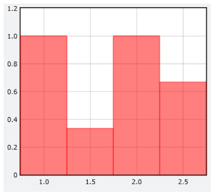
Do save these codes as histogram.py in your homework folder
import numpy as np
import vpython as vp
class ghistogram:
def __init__(self, graph, bins, color=vp.color.red):
self.bins = bins
self.slotnumber = len(bins)
self.slotwidth = bins[1] - bins[0]
self.n = 0
self.slots = np.zeros(len(bins))
self.bars = vp.gvbars(graph=graph, delta=self.slotwidth, color=color)
def plot(self, data):
currentslots = np.zeros(self.slotnumber)
for value in data:
currentslots[min(max(int((value - self.bins[0])/self.slotwidth), 0), self.slotnumber-1)] += 1
self.slots = (self.slots * self.n + currentslots)/(self.n + 1)
self.n += 1
if self.n == 1:
for (currentbin, barlength) in zip(self.bins, self.slots):
self.bars.plot( pos = (currentbin, barlength))
else:
self.bars.data = list(zip(self.bins, self.slots))
if __name__ == '__main__':
vdist = vp.graph(width=450)
observation = ghistogram(graph=vdist, bins=np.arange(1, 3, 0.5))
observation.plot(data=[1.2, 2.3, 4])
observation.plot(data=[1, 1.7, 2.6])
observation.plot (data=[-0.5, 2, 2.3])
This module provides you the ghistogram class to plot the histogram for a series of data. Remember to put this file histogram.py in the same folder as your main program. If you are interested in how this class is written, you can look at the details of the program, otherwise, you just use this module to finish your homework.
Codes under if __name__ == '__main__': shows how to use it. You first import vpython and create a graph (here it is vdist). Then you can create an ghistogram object (here it is observation), in which it must specified in which graph it should display (graph=vdist), the bins (here it is 1-1.5, 1.5-2, 2-2.5, 2.5-3), and the color of the histogram. If you do not specify what color the histogram should be, it defaults to red. Then in the method observation.plot, you give the data (can be list or array), it then counts the number of occurrence of the values in data, averages the number of occurrence over times this method has been called and plots the latest results. If a value in data is smaller than the lower bound, it is counted as in the lowest bin, similarly, if a value is larger than the upper bound, it is counted as in the highest bin. For example, the 3 rows of data will yield the histogram in the figure.
III. Template File for Gas in a Container
Do save these codes as VP9.py in your homework folder
助教註:
Before you going on…
Do read the insturctions here, which cover the concept introduced in VP7, or you may just feel WTF while reading the following part.
Here Professor put almost all the instructions in the comment. But in this html/markdown format, doing so will make the instructions harder to read, so I will devide the codes into several parts and move some long sentences out of the code comments. To execute the code, just combine these parts yourselves.
Just notifying you the slight difference between this doc and Professor’s. You could also read this part in Professor’s PDF if you want.
Read the template program for simulation of a gas of 200 He atoms in a container. The most difficult part is the section commented by ### Find collisions between pairs of atoms, and handle their collisions. If you do not understand this part, it is ok to skip it.
The entire program is written very straight forward: setting the suitable parameters, preparing for the plotting for histogram, initialization of the atoms, and the main program that includes the movements of the atoms, handling the atom-atom collisions, and the handling the atom-wall collisions. In the program, we use numpy’s array to expedite the execution.
Code
Module importing
from vpython import *
import numpy as np
from histogram import *
Note: The module histogram here is just your histogram.py. All the functions and classes inside it would be imported to your namespace.
Parameter setting
size: The size for He atom. It’s 10 times bigger than the real value for easier collision but not too big for accuracy.L: 2L is the cubic container’s original length, width, and height.- Others: Just see the comment.
N = 200
m, size = 4e-3/6e+23, 31e-12*10
L = ((24.4e-3/(6e+23))*N)**(1/3) / 2 + size
k, T = 1.38e-23, 298.0
t, dt = 0, 3e-13
vrms = (2*k*1.5*T/m)**0.5
stage = 0
atoms = []
Histogram setting
deltav: slot width(bin width) for v histogramtheory_low_T: for plotting the curve of the theoretical atom speed distribution
deltav = 50.0
vdist = graph(x=800, y=0, ymax=N*deltav/1000, width=500, height=300,
xtitle='v', ytitle='dN', align='left')
theory_low_T = gcurve(color=color.cyan)
dv = 10
for v in np.arange(0, 4201+dv, dv):
theory_low_T.plot(pos=(v, (deltav/dv)*N*4*pi*((m/(2*pi*k*T))**1.5)*exp((-0.5*m*v**2)/(k*T))*(v**2)*dv))
observation = ghistogram(graph=vdist, bins=np.arange(0, 4200, deltav), color=color.red)
Initialization
p_a, v_a: The position array and the velocity array of the particle, each containing 3 components for N particles.ra, rb: The random numbers used to decide the direction of v_a. (The magnitudes, or speeds, are the same.) They are just polar angles.
In the beginning of the for loop, we randomly assign the position to the i-th row of p_a. Then we set the last (i == N-1) atom to be yellow and leave a trail, while the other atoms are in random color with no trail.
scene = canvas(width=500, height=500, background=vector(0.2,0.2,0), align='left')
container = box(length=2*L, height=2*L, width=2*L, opacity=0.2, color=color.yellow)
p_a, v_a = np.zeros((N,3)), np.zeros((N,3))
for i in range(N):
p_a[i] = [2 * L*random() - L, 2 * L*random() - L, 2 * L*random() - L]
if i== N-1:
atom = sphere(pos=vector(p_a[i, 0], p_a[i, 1], p_a[i, 2]), radius=size, color=color.yellow, make_trail=True, retain=50)
else:
atom = sphere(pos=vector(p_a[i, 0], p_a[i, 1], p_a[i, 2]), radius=size, color=vector(random(), random(), random()))
ra = pi*random()
rb = 2*pi*random()
v_a[i] = [vrms*sin(ra)*cos(rb), vrms*sin(ra)*sin(rb), vrms*cos(ra)]
atoms.append(atom)
Handling the collision
def vcollision(a1p, a2p, a1v, a2v):
v1prime = a1v - (a1p - a2p) * sum((a1v-a2v)*(a1p-a2p)) / sum((a1p-a2p)**2)
v2prime = a2v - (a2p - a1p) * sum((a2v-a1v)*(a2p-a1p)) / sum((a2p-a1p)**2)
return v1prime, v2prime
Main program
The instructions about the ### part will be moved to the end of this section.
while True:
t += dt
rate(10000)
p_a += v_a*dt
for i in range(N):
atoms[i].pos = vector(p_a[i, 0], p_a[i, 1], p_a[i, 2])
if stage != 1 :
observation.plot(data=np.sqrt(np.sum(np.square(v_a),-1)))
r_array = p_a - p_a[:, np.newaxis]
rmag = np.sqrt(np.sum(np.square(r_array),-1))
hit = np.less_equal(rmag,2*size) - np.identity(N)
hitlist = np.sort(np.nonzero(hit.flat)[0]).tolist()
for ij in hitlist:
i, j = divmod(ij,N)
hitlist.remove(j*N+i)
if sum((p_a[i]-p_a[j])*(v_a[i]-v_a[j])) < 0 :
v_a[i], v_a[j] = vcollision(p_a[i], p_a[j], v_a[i], v_a[j])
for i in range(N):
if abs(p_a[i][0]) >= L - size and p_a[i][0]*v_a[i][0] > 0 :
v_a[i][0] = - v_a[i][0]
if abs(p_a[i][1]) >= L - size and p_a[i][1]*v_a[i][1] > 0 :
v_a[i][1] = - v_a[i][1]
if abs(p_a[i][2]) >= L - size and p_a[i][2]*v_a[i][2] > 0 :
v_a[i][2] = - v_a[i][2]
When you run this program, you will see a container and within it 200 He atoms running and colliding, with one of them traveling with a trail. In the histogram, you will see the theoretical speed distribution curve (i.e. Maxwell-Boltzmann distribution) whose equation is copied from the textbook. After running the program for some time, you will see that the speed distribution histogram looks just like the theoretical curve. Remember that, the program starts with all the atoms to have the same initial speed. However, only after certain time span and certain number of collisions to allow the atoms to exchange energy, the speed distribution becomes the Maxwell-Boltzmann distribution, without any special treatment.
The ### part
助教註:
Must of the contents here are added by myself, and just like Professor said, you could skip this part if you don’t want to understand the code.
It this part, there appear some difficult stuff, like np.newaxis, and some deeper properties of numpy, such as “broadcasting”, so it’s much harder to understand. However, it’s necessary to use these numpy tools, or the program would be extremely slow. I won’t tell you the details of every function we used but will try to tell you what happened.
The purpose of these codes is to detect the collision between the atoms, then pick up these colliding atoms and deal with their velocities.
-
r_array = p_a - p_a[:, np.newaxis]
np.newaxis is a special object to add a new axis to the array, so the array will become 3D. But don’t be terrified. Because the 2nd dimension of p_a is just the 3 components of the position, we can “hide” this dimension, and p_a - p_a[:, np.newaxis] could be written as
&space;-&space;\begin{pmatrix}&space;\vec{x_0}\\&space;\vec{x_1}\\&space;...&space;\end{pmatrix})
(here I use x to represent the position.) Then, because a property of Numpy called “broadcasting”, this subtraction will actually become


So the r_array is just a matrix of displacement vectors. (Δx⃗ 21 stands for the displacement vector pointing from the 1st atom to the 2nd atom)
-
rmag = np.sqrt(np.sum(np.square(r_array),-1))
Although we write the r_array like 2D, don’t forget it’s actually 3D. Here np.square squares each components of the displacement vectors. Then np.sum sums up the three components, because the parameter -1 indicates that the axis to be summed up is the last axis. Finally, after np.sqrt takes the square root, we get rmag. It’s just like replacing the displacement vectors in r_array with distances (scalar), so we get a 2D array again.
-
hit = np.less_equal(rmag, 2*size) - np.identity(N)
This line is easier. np.less_equal(rmag, 2*size) examines whether the elements of rmag are less than or equal to 2*size and return True or False (It’s element-wise, so the return value is an array with the same shape as rmag).
Then we subtract np.identity(N) from the array to eliminate the diagonal elements. (The distance between an atom and itself, which is zero, will definitely less than 2*size, but it’s not what we are finding.)
So if only the 0th and the 1st atoms are colliding, hit will look like this:

-
hitlist = np.sort(np.nonzero(hit.flat)[0]).tolist()
for ij in hitlist:
i, j = divmod(ij,N)
hitlist.remove(j*N+i)
if sum((p_a[i]-p_a[j])*(v_a[i]-v_a[j])) < 0 :
v_a[i], v_a[j] = vcollision(p_a[i], p_a[j], v_a[i], v_a[j])
First, hit.flat flattens the hit to 1D. In our case that only the 0th and 1st atoms are colliding, only the 1st and the N-th value in this 1D array are not zero. Then np.nonzero will find out the indices with non-zero value and return the indices in the form of (np.array, ), which is a tuple. So we use [0] to extract the indices array, sort it, and turn it into a list. (I think it’s because Professor wants to use the list.remove method.)
Then, the for loop iterates the indices. Because the flattened indices ij are actually i*N + j, if i is the row index and j is the column index, so we can extract the i and j by divmod(ij, N). And because the hit[j, i] represents the same pair of atoms, so we remove this element by hitlist.remove(j*N+i).
Finally, we examine the direction of velocities, just as we did in the previous homework, and then use vcollision to perform the collision.
For the usage of np.newaxis, you can take a look at this page (in Mandarin):
http://ben-do.github.io/2016/09/15/change-shape-of-matrix-by-numpy/
IV. Homework
Now you need to complete the simulation for the adiabatic compression and free expansion with the above template file. Read carefully the template program (It’s OK to skip ### part). You need to understand the logic behind the program in order to complete this simulation. In this program, you also need to implement a section of code for an interrupt callback function with 'n' key to advance in stages if you are using keyboard control, or with a button 'n' to advance in stages if you are using button control.
In each stage, do the following:
For every 1000*dt, in addition to the main animation that shows the gas of atoms in the container and the graph that shows the histogram of the speed distribution, print the following:
-
T (temperature):
calculated by T = Total Translational Kinetic Energy / (3*N*k/2), N is the number of molecules and k the Boltzmann constant
-
p (pressure):
calculated by the total momentum impacted on the 6 walls within the 1000*dt time span, divided by 1000*dt, divided by total wall area, which is just total impulse(衝量) / (1000*dt) / total area.
Note: 
-
V (volume):
length * height * width of the container at any moment
-
p * V
-
N * k * T: you will see at any moment p*V is close to N*k*T.
-
p * (V**gamma):
the product of pressure and the volume to the power of gamma. Since the motion is three-dimensional, therefore the degree of freedom is 3 (without rotation and vibration for monatomic molecule). The ratio of the constant-pressure heat capacity to the constant-volume heat capacity is gamma = (1+3/2) / (3/2) = 5/3.
In Stage 0 (initial stage):
You wait the system to reach the equilibrium, which is indicated by the speed distribution histogram very close to the theoretical curve. Then you hit the ‘n’, freeze the current histogram plot (this is already done by ##) and go to Stage 1.
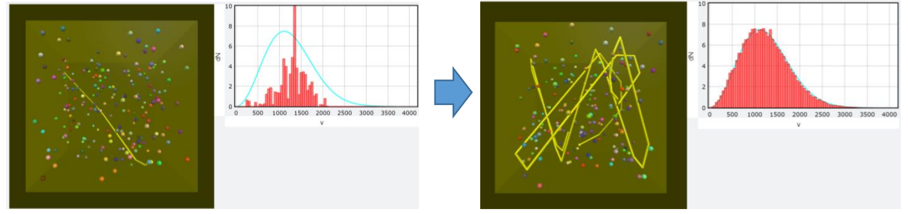
In Stage 1 (adiabatic compression):
Make the left and right walls (in x-axis) move towards the center with a speed v_W = L / (20000.0*dt). This has two effects:
-
the available space for the atoms to move is smaller.
-
since the walls have mass much larger than that of the atoms, therefore when the atoms hit elastically on the moving walls, they are bounced back with a velocity that the walls’ velocity needs to be considered (you need to implement this in the program).
Until the total length of the container becomes 1/2 of that of the original container or until you hit ‘n’ again (depending on which comes first), stop the walls from moving and go to Stage 2.
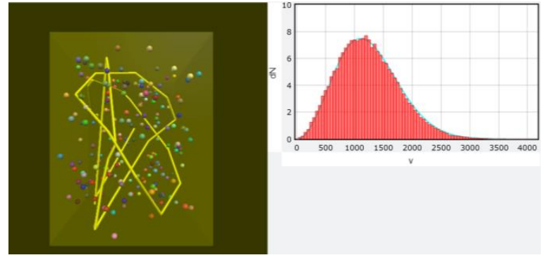
In Stage 2:
Start a new histogram for the speed of the atoms and add a new theoretical curve according to the current temperature. Wait until the histogram reaches the new equilibrium (i.e. the histogram is very close the theoretical value), hit the ‘n’ and go to Stage 3.
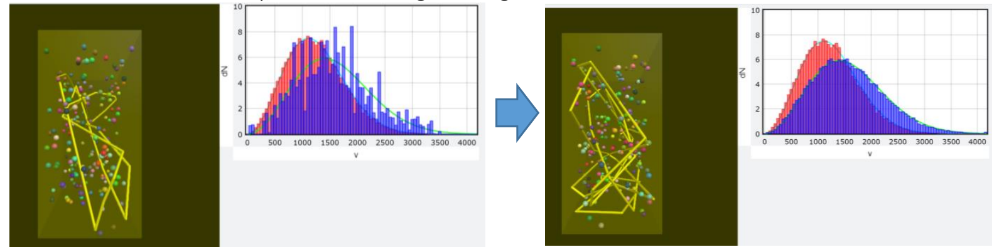
In Stage 3 (free expansion):
The walls suddenly go to their original positions as in Stage 0, mimicking a free expansion, in which the gas expands in an infinitesimal time without any resistance.
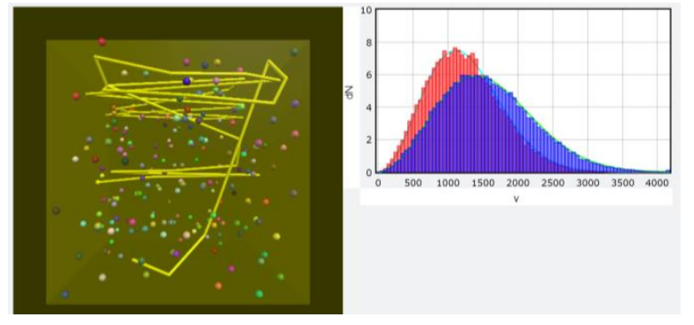
Run your program, observe carefully about the physics and find what happens to T, p, V, p * V, N * k * T and p * (V**gamma). Are these value matching to the theoretically prediction by your text book? Are the speed distribution matching the Maxwell-Boltzmann Distribution for the same temperature? Think about the physics why you get these results. Do Notice that, in this simulation, nothing but exchange of energy of elastic collision causes these results.
V. Grading Policy
Must
Here I list 6 targets. Your grade will be determined by how many targets you achieved, as I show in the table below.
| Your grade |
N (# of targets) |
| 20% |
1 |
| 40% |
2 |
| 60% |
3 or 4 |
| 80% |
5 |
| 100% |
6 |
- N: the number of the targets achieved by you
Targets
VP9: Spring-Ball Wave and Dispersion of 1D phonon [numpy array]
這份作業說明的長度本來就很長（我還貢獻了一點…），還補充說明了之前跳過的 VP7 提到的
numpy這個工具，所以大家有空就盡早完成它吧。影片以及官方PDF
同學們的影片
作業繳交格式
請上傳一個 zip 檔（壓縮檔，請注意副檔名要是
zip）到 CEIBA，zip 檔內需要包含一個名稱是自己學號的資料夾，裡面包含兩個 py 檔。請將必作部份取名為must.py，另一個檔案則是histogram.py，後面會有關於這個檔案的說明。若本次作業有拍攝說明影片，請將影片連結寫在video.txt裡面，並一併放入學號資料夾中。範例：（zip 檔名可以隨便取，CEIBA 系統會自己把檔名改掉）
繳交期限
2019/01/12 SUN 21:00I. Callback and Keyboard Control
In some programs, e.g. games, you use mice or keyboards to control things but at the same time, the programs continue running. An interrupt callback function can help you do this kind of work. The following example shows how to use arrow keys and letter keys (‘i’, ‘o’, ‘r’, ‘c’) to control the earth’s position and rotation axis while the earth continues spinning. However, in Jupyter this will not work since Jupyter console has a higher priority accessing to the keyboard than your vpython program. As a result, your program will not know if a keyboard is pressed or not. You can use the method marked as ##(for JUPYTER also for VIDLE).
Code for ones not using Jupyter
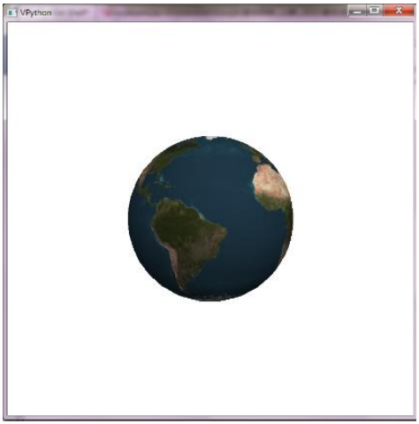from vpython import * pos, angle = vector(0, 0, 0), 0 def keyinput(evt): #keyboard callback function global pos, angle move = {'left': vector(-0.1, 0, 0), 'right': vector(0.1, 0, 0), 'up': vector(0, 0.1, 0), 'down': vector(0, -0.1, 0), 'i' : vector(0, 0, -0.1), 'o': vector(0, 0, 0.1)} roa = {'c' : pi / 90.0 , 'r': - pi / 90.0} s = evt.key if s in move: pos = pos + move[s] if s in roa: ball.rotate(angle=roa[s], axis=vector(0, 0, 1), origin=ball.pos) angle = angle - roa[s] scene = canvas(width=800, height=800, range=5, background=color.white) ball = sphere(radius=2.0, texture=textures.earth ) scene.bind('keydown', keyinput) # setting for the binding function while True: rate(1000) ball.rotate(angle=pi/600, axis=vector(sin(angle), cos(angle) ,0), origin=pos) ball.pos = posIn
def keyinput(evt), which is the interrupt callback function,globaldeclares the variables (pos,angle) to be global variables, meaning their values will be known to the entire program (exceeding the scope of this function).s = evt.keygets the key that is pressed. Then you can decide what to do withs. For example,ball.rotate(angle=roa[s], axis=vector(0, 0, 1), origin=ball.pos)will rotateballwith anangle, aroundaxisthat passes throughorigin. Any vpython drawn object, such assphereorbox, can be rotated by thisrotatemethod.In the main program, command
scene.bind('keydown', keyinput)bindskeyinputwithscene. When your active window issceneand the event'keydown'(here, a key of the keyboard is pressed) happens, no matter at which part of the program it is now being executed, the bound function,keyinput(), will interrupt and be executed right away. After the bound function has finished, the program will go back to the program where it has left just before the interrupt event has happened.http://www.glowscript.org/docs/VPythonDocs/keyboard.html.
http://www.glowscript.org/docs/VPythonDocs/mouse.html.
Code for Jupyter (also available for other environments)
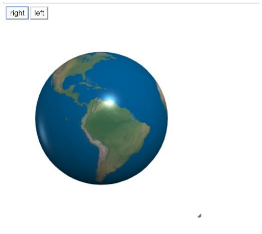from vpython import * pos, angle = vector(0, 0, 0), 0 def right(b): #callback function global pos, angle pos = pos + vector(0.1, 0, 0) def left(b): global pos, angle pos = pos + vector(-0.1, 0, 0) scene = canvas(width=400, height=400, range=5, background=color.white) ball = sphere(radius=2.0, texture=textures.earth ) button(text='right', pos=scene.title_anchor, bind=right) button(text='left', pos=scene.title_anchor, bind=left) while True: rate(1000) ball.rotate(angle=pi/600, axis=vector(sin(angle), cos(angle), 0), origin=pos) ball.pos = posIn
def right(b), which is the interrupt callback function,globaldeclares the variablesposandangleto be global variables, meaning their values will be known to the entire program (exceeding the scope of this function). When this function is executed,posis added byvector(0.1, 0, 0). The same is applied similarly todef left(b). You can write similar functions to control theposor theangle.In the main program, command
button(text='right', pos=scene.title_anchor, bind=right)creates a button withtext='right'with the button’s position set bypos=scene.title_anchor. The most importantly, this button is bound to functionrightbybind=right, meaning that if this button is clicked, the bound function will be executed no matter at which part of the program it is now being executed, the bound function,right(), will interrupt and be executed right away. After the bound function has finished, the program will go back to the program where it has left just before the interrupt event has happened.In the main loop
ball.rotate(angle=pi/600, axis=vector(sin(angle), cos(angle), 0), origin=pos)will rotateballwith anangle, aroundaxisthat passes throughorigin. Any vpython drawn object, such assphereorbox, can be rotated by thisrotatemethod.http://www.glowscript.org/docs/VPythonDocs/controls.html
II. Histogram Module
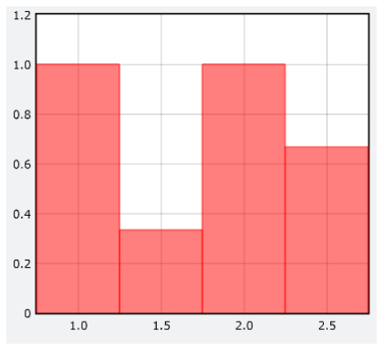Do save these codes as
histogram.pyin your homework folderimport numpy as np import vpython as vp class ghistogram: def __init__(self, graph, bins, color=vp.color.red): self.bins = bins self.slotnumber = len(bins) self.slotwidth = bins[1] - bins[0] self.n = 0 self.slots = np.zeros(len(bins)) self.bars = vp.gvbars(graph=graph, delta=self.slotwidth, color=color) def plot(self, data): currentslots = np.zeros(self.slotnumber) for value in data: currentslots[min(max(int((value - self.bins[0])/self.slotwidth), 0), self.slotnumber-1)] += 1 self.slots = (self.slots * self.n + currentslots)/(self.n + 1) self.n += 1 if self.n == 1: for (currentbin, barlength) in zip(self.bins, self.slots): self.bars.plot( pos = (currentbin, barlength)) else: self.bars.data = list(zip(self.bins, self.slots)) if __name__ == '__main__': vdist = vp.graph(width=450) observation = ghistogram(graph=vdist, bins=np.arange(1, 3, 0.5)) observation.plot(data=[1.2, 2.3, 4]) observation.plot(data=[1, 1.7, 2.6]) observation.plot (data=[-0.5, 2, 2.3])This module provides you the
ghistogramclass to plot the histogram for a series of data. Remember to put this filehistogram.pyin the same folder as your main program. If you are interested in how this class is written, you can look at the details of the program, otherwise, you just use this module to finish your homework.Codes under
if __name__ == '__main__':shows how to use it. You first import vpython and create agraph(here it isvdist). Then you can create anghistogramobject (here it isobservation), in which it must specified in which graph it should display (graph=vdist), the bins (here it is 1-1.5, 1.5-2, 2-2.5, 2.5-3), and the color of the histogram. If you do not specify what color the histogram should be, it defaults to red. Then in the methodobservation.plot, you give thedata(can belistorarray), it then counts the number of occurrence of the values indata, averages the number of occurrence over times this method has been called and plots the latest results. If a value in data is smaller than the lower bound, it is counted as in the lowest bin, similarly, if a value is larger than the upper bound, it is counted as in the highest bin. For example, the 3 rows of data will yield the histogram in the figure.III. Template File for Gas in a Container
Do save these codes as
VP9.pyin your homework folderRead the template program for simulation of a gas of 200 He atoms in a container. The most difficult part is the section commented by
### Find collisions between pairs of atoms, and handle their collisions. If you do not understand this part, it is ok to skip it.The entire program is written very straight forward: setting the suitable parameters, preparing for the plotting for histogram, initialization of the atoms, and the main program that includes the movements of the atoms, handling the atom-atom collisions, and the handling the atom-wall collisions. In the program, we use numpy’s array to expedite the execution.
Code
Module importing
from vpython import * import numpy as np from histogram import *Note: The module
histogramhere is just yourhistogram.py. All the functions and classes inside it would be imported to your namespace.Parameter setting
size: The size for He atom. It’s 10 times bigger than the real value for easier collision but not too big for accuracy.L: 2L is the cubic container’s original length, width, and height.# parameters N = 200 m, size = 4e-3/6e+23, 31e-12*10 L = ((24.4e-3/(6e+23))*N)**(1/3) / 2 + size k, T = 1.38e-23, 298.0 # Boltzmann constant and initial temperature t, dt = 0, 3e-13 vrms = (2*k*1.5*T/m)**0.5 # initial root mean square velocity stage = 0 # stage number atoms = [] # list to store atomsHistogram setting
deltav: slot width(bin width) for v histogramtheory_low_T: for plotting the curve of the theoretical atom speed distribution# histogram setting deltav = 50.0 vdist = graph(x=800, y=0, ymax=N*deltav/1000, width=500, height=300, xtitle='v', ytitle='dN', align='left') theory_low_T = gcurve(color=color.cyan) dv = 10 # Plot the theoretical speed distribution for v in np.arange(0, 4201+dv, dv): theory_low_T.plot(pos=(v, (deltav/dv)*N*4*pi*((m/(2*pi*k*T))**1.5)*exp((-0.5*m*v**2)/(k*T))*(v**2)*dv)) # For the speed distribution in the simulation observation = ghistogram(graph=vdist, bins=np.arange(0, 4200, deltav), color=color.red)Initialization
p_a,v_a: The position array and the velocity array of the particle, each containing 3 components for N particles.ra,rb: The random numbers used to decide the direction ofv_a. (The magnitudes, or speeds, are the same.) They are just polar angles.In the beginning of the for loop, we randomly assign the position to the i-th row of
p_a. Then we set the last (i == N-1) atom to be yellow and leave a trail, while the other atoms are in random color with no trail.# initialization scene = canvas(width=500, height=500, background=vector(0.2,0.2,0), align='left') container = box(length=2*L, height=2*L, width=2*L, opacity=0.2, color=color.yellow) p_a, v_a = np.zeros((N,3)), np.zeros((N,3)) for i in range(N): p_a[i] = [2 * L*random() - L, 2 * L*random() - L, 2 * L*random() - L] if i== N-1: atom = sphere(pos=vector(p_a[i, 0], p_a[i, 1], p_a[i, 2]), radius=size, color=color.yellow, make_trail=True, retain=50) else: atom = sphere(pos=vector(p_a[i, 0], p_a[i, 1], p_a[i, 2]), radius=size, color=vector(random(), random(), random())) ra = pi*random() rb = 2*pi*random() v_a[i] = [vrms*sin(ra)*cos(rb), vrms*sin(ra)*sin(rb), vrms*cos(ra)] atoms.append(atom)Handling the collision
# The function for handling velocity after collisions between two atoms def vcollision(a1p, a2p, a1v, a2v): v1prime = a1v - (a1p - a2p) * sum((a1v-a2v)*(a1p-a2p)) / sum((a1p-a2p)**2) v2prime = a2v - (a2p - a1p) * sum((a2v-a1v)*(a2p-a1p)) / sum((a2p-a1p)**2) return v1prime, v2primeMain program
The instructions about the
###part will be moved to the end of this section.# main program while True: t += dt rate(10000) # Calculate the new positions of all the atoms and renew them p_a += v_a*dt for i in range(N): atoms[i].pos = vector(p_a[i, 0], p_a[i, 1], p_a[i, 2]) ## Freeze the histogram for stage != 1 if stage != 1 : observation.plot(data=np.sqrt(np.sum(np.square(v_a),-1))) ### Find collisions between pairs of atoms, and handle their collisions r_array = p_a - p_a[:, np.newaxis] rmag = np.sqrt(np.sum(np.square(r_array),-1)) hit = np.less_equal(rmag,2*size) - np.identity(N) hitlist = np.sort(np.nonzero(hit.flat)[0]).tolist() for ij in hitlist: i, j = divmod(ij,N) hitlist.remove(j*N+i) if sum((p_a[i]-p_a[j])*(v_a[i]-v_a[j])) < 0 : v_a[i], v_a[j] = vcollision(p_a[i], p_a[j], v_a[i], v_a[j]) # Find collisions between the atoms and the walls, and handle their collisions for i in range(N): if abs(p_a[i][0]) >= L - size and p_a[i][0]*v_a[i][0] > 0 : v_a[i][0] = - v_a[i][0] if abs(p_a[i][1]) >= L - size and p_a[i][1]*v_a[i][1] > 0 : v_a[i][1] = - v_a[i][1] if abs(p_a[i][2]) >= L - size and p_a[i][2]*v_a[i][2] > 0 : v_a[i][2] = - v_a[i][2]When you run this program, you will see a container and within it 200 He atoms running and colliding, with one of them traveling with a trail. In the histogram, you will see the theoretical speed distribution curve (i.e. Maxwell-Boltzmann distribution) whose equation is copied from the textbook. After running the program for some time, you will see that the speed distribution histogram looks just like the theoretical curve. Remember that, the program starts with all the atoms to have the same initial speed. However, only after certain time span and certain number of collisions to allow the atoms to exchange energy, the speed distribution becomes the Maxwell-Boltzmann distribution, without any special treatment.
The
###partIt this part, there appear some difficult stuff, like
np.newaxis, and some deeper properties ofnumpy, such as “broadcasting”, so it’s much harder to understand. However, it’s necessary to use thesenumpytools, or the program would be extremely slow. I won’t tell you the details of every function we used but will try to tell you what happened.The purpose of these codes is to detect the collision between the atoms, then pick up these colliding atoms and deal with their velocities.
np.newaxisis a special object to add a new axis to the array, so the array will become 3D. But don’t be terrified. Because the 2nd dimension ofp_ais just the 3 components of the position, we can “hide” this dimension, andp_a - p_a[:, np.newaxis]could be written as(here I use x to represent the position.) Then, because a property of Numpy called “broadcasting”, this subtraction will actually become
So theΔx⃗ 21 stands for the displacement vector pointing from the 1st atom to the 2nd atom)
r_arrayis just a matrix of displacement vectors. (rmag = np.sqrt(np.sum(np.square(r_array),-1))Although we write the
r_arraylike 2D, don’t forget it’s actually 3D. Herenp.squaresquares each components of the displacement vectors. Thennp.sumsums up the three components, because the parameter-1indicates that the axis to be summed up is the last axis. Finally, afternp.sqrttakes the square root, we getrmag. It’s just like replacing the displacement vectors inr_arraywith distances (scalar), so we get a 2D array again.hit = np.less_equal(rmag, 2*size) - np.identity(N)This line is easier.
np.less_equal(rmag, 2*size)examines whether the elements ofrmagare less than or equal to2*sizeand returnTrueorFalse(It’s element-wise, so the return value is an array with the same shape asrmag).Then we subtract
np.identity(N)from the array to eliminate the diagonal elements. (The distance between an atom and itself, which is zero, will definitely less than2*size, but it’s not what we are finding.)So if only the 0th and the 1st atoms are colliding,
hitwill look like this:hitlist = np.sort(np.nonzero(hit.flat)[0]).tolist() for ij in hitlist: i, j = divmod(ij,N) hitlist.remove(j*N+i) if sum((p_a[i]-p_a[j])*(v_a[i]-v_a[j])) < 0 : v_a[i], v_a[j] = vcollision(p_a[i], p_a[j], v_a[i], v_a[j])First,
hit.flatflattens thehitto 1D. In our case that only the 0th and 1st atoms are colliding, only the 1st and the N-th value in this 1D array are not zero. Thennp.nonzerowill find out the indices with non-zero value and return the indices in the form of(np.array, ), which is a tuple. So we use[0]to extract the indices array, sort it, and turn it into a list. (I think it’s because Professor wants to use thelist.removemethod.)Then, the for loop iterates the indices. Because the flattened indices
ijare actuallyi*N + j, ifiis the row index andjis the column index, so we can extract theiandjbydivmod(ij, N). And because thehit[j, i]represents the same pair of atoms, so we remove this element byhitlist.remove(j*N+i).Finally, we examine the direction of velocities, just as we did in the previous homework, and then use
vcollisionto perform the collision.IV. Homework
Now you need to complete the simulation for the adiabatic compression and free expansion with the above template file. Read carefully the template program (It’s OK to skip
###part). You need to understand the logic behind the program in order to complete this simulation. In this program, you also need to implement a section of code for an interrupt callback function with'n'key to advance in stages if you are using keyboard control, or with a button'n'to advance in stages if you are using button control.In each stage, do the following:
For every
1000*dt, in addition to the main animation that shows the gas of atoms in the container and the graph that shows the histogram of the speed distribution, print the following:T (temperature):
calculated by
T = Total Translational Kinetic Energy / (3*N*k/2),Nis the number of molecules andkthe Boltzmann constantp (pressure):
calculated by the total momentum impacted on the 6 walls within the
1000*dttime span, divided by1000*dt, divided by total wall area, which is justtotal impulse(衝量) / (1000*dt) / total area.Note:
V (volume):
length * height * widthof the container at any momentp * V
N * k * T: you will see at any moment
p*Vis close toN*k*T.p * (V**gamma):
the product of pressure and the volume to the power of gamma. Since the motion is three-dimensional, therefore the degree of freedom is 3 (without rotation and vibration for monatomic molecule). The ratio of the constant-pressure heat capacity to the constant-volume heat capacity is
gamma = (1+3/2) / (3/2) = 5/3.In Stage 0 (initial stage):
You wait the system to reach the equilibrium, which is indicated by the speed distribution histogram very close to the theoretical curve. Then you hit the
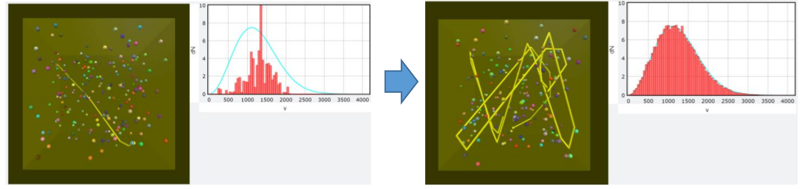‘n’, freeze the current histogram plot (this is already done by ##) and go to Stage 1.In Stage 1 (adiabatic compression):
Make the left and right walls (in x-axis) move towards the center with a speed
v_W = L / (20000.0*dt). This has two effects:the available space for the atoms to move is smaller.
since the walls have mass much larger than that of the atoms, therefore when the atoms hit elastically on the moving walls, they are bounced back with a velocity that the walls’ velocity needs to be considered (you need to implement this in the program).
Until the total length of the container becomes 1/2 of that of the original container or until you hit
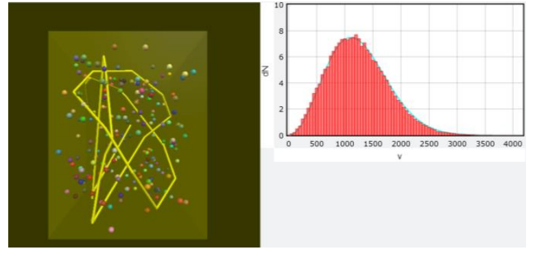‘n’again (depending on which comes first), stop the walls from moving and go to Stage 2.In Stage 2:
Start a new histogram for the speed of the atoms and add a new theoretical curve according to the current temperature. Wait until the histogram reaches the new equilibrium (i.e. the histogram is very close the theoretical value), hit the
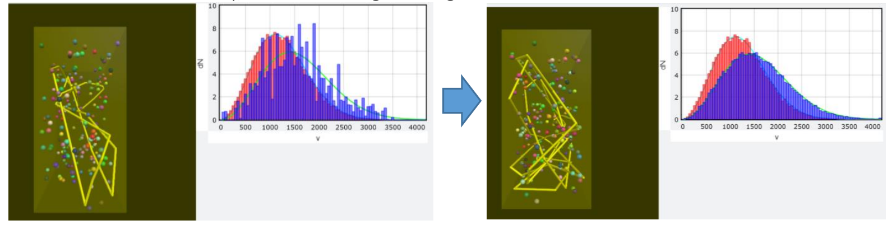‘n’and go to Stage 3.In Stage 3 (free expansion):
The walls suddenly go to their original positions as in Stage 0, mimicking a free expansion, in which the gas expands in an infinitesimal time without any resistance.
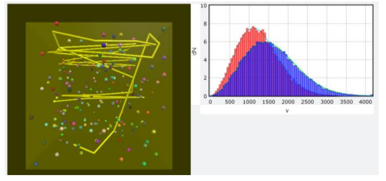Run your program, observe carefully about the physics and find what happens to
T,p,V,p * V,N * k * Tandp * (V**gamma). Are these value matching to the theoretically prediction by your text book? Are the speed distribution matching the Maxwell-Boltzmann Distribution for the same temperature? Think about the physics why you get these results. Do Notice that, in this simulation, nothing but exchange of energy of elastic collision causes these results.V. Grading Policy
Must
Here I list 6 targets. Your grade will be determined by how many targets you achieved, as I show in the table below.
Targets
pV = NkTalmost holds at every moment.Tincreases in stage 1.p * (V**gamma)matches the theoretical prediction in stage 1.Tin stage 3 matches the theoretical prediction.